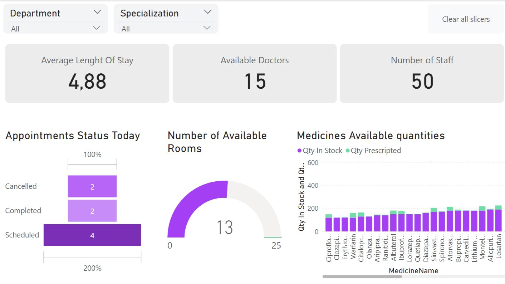

Introduction
These dashboards utilize data visualization to monitor performance, analyze trends (often segmented by time or category), and forecast outcomes across diverse areas such as housing, population, education, and online engagement.
Engagement Score Forecast

Engagement Score Forecast: Tracks historical engagement scores and forecasts future trends, allowing analysis across Pre-Covid, Covid Lockdown, and Post Lockdown periods.
Conversation & Engagement Snapshot
Conversation & Engagement Snapshot: Summarizes key conversation metrics (count, likes, retweets) and provides breakdowns by media type, region, time category (business/non-business hours), and week status (weekday/weekend).
Sentiment & Communication Analysis

Sentiment & Communication Analysis: Breaks down communication styles (first-person vs. social reference) and analyzes sentiment (positive, negative, net) across Pre-Covid, Covid Lockdown, and Post Lockdown phases.
Conclusion
Overall, these dashboards effectively utilize data visualization to monitor key performance indicators, analyze trends (often segmented by time periods like Covid phases or forecast into the future), and provide breakdowns across various dimensions (geography, demographics, type, sentiment). They serve as tools for understanding status, tracking change, and potentially informing decisions within their respective domains (housing, population, education, online engagement).